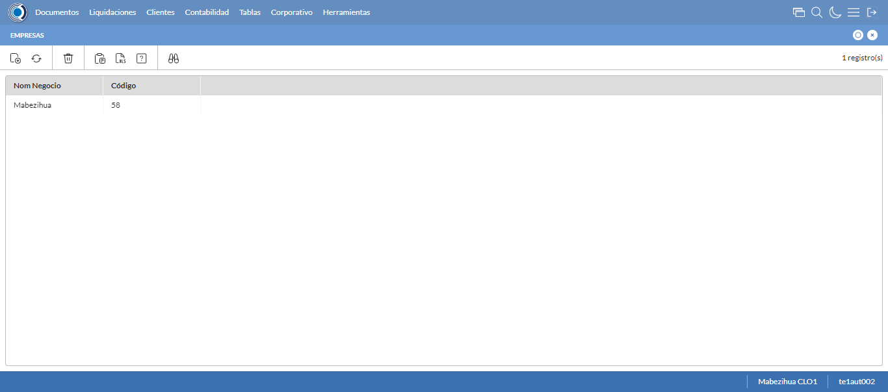
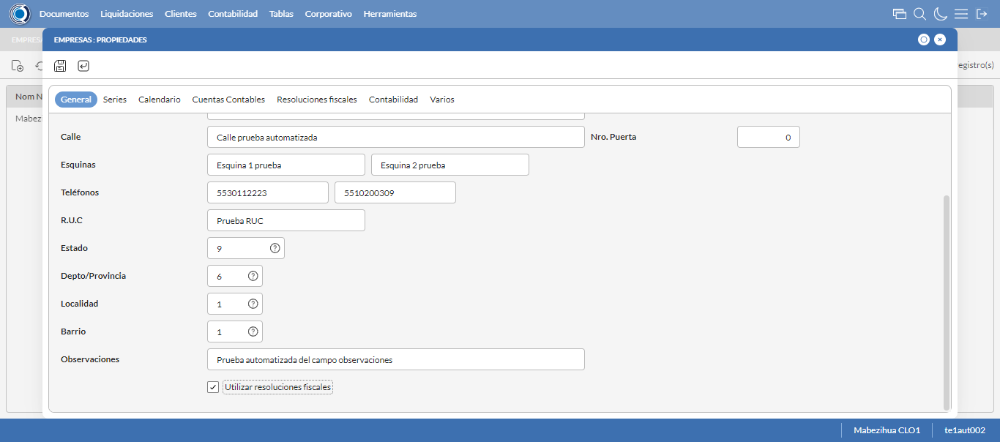
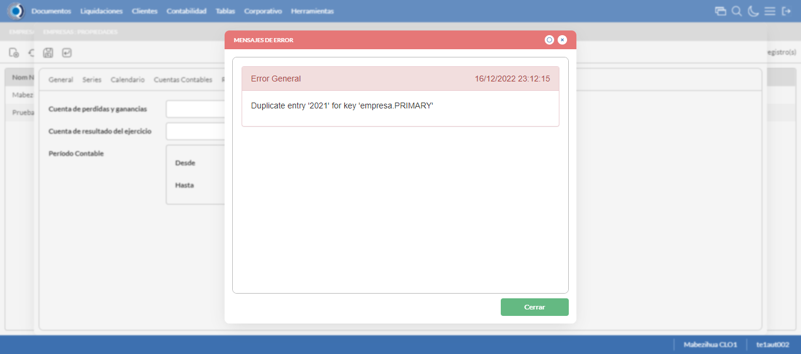
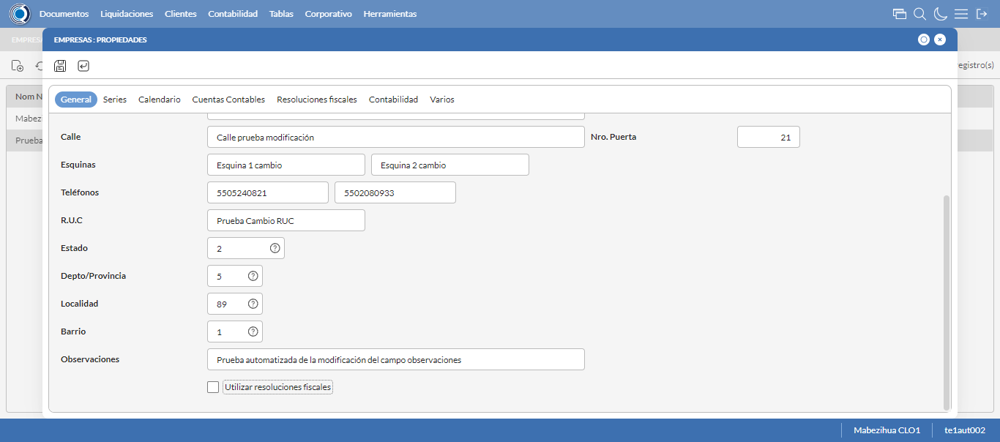
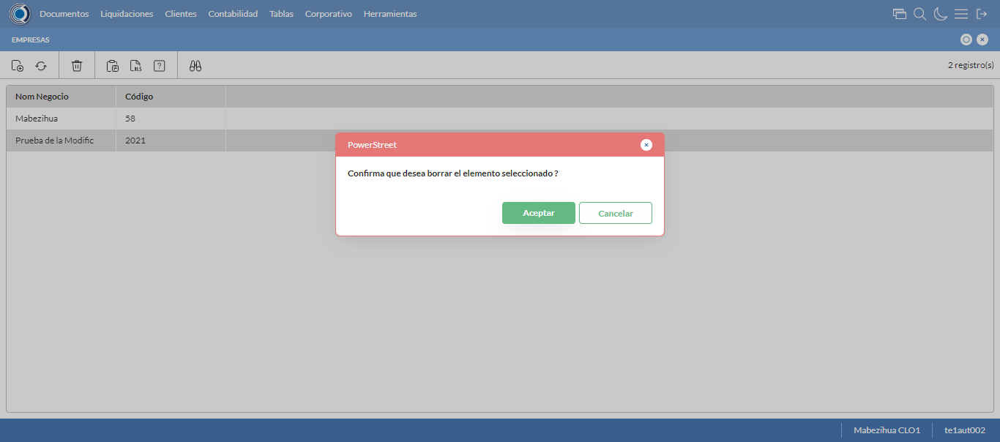

Desarrollado por : Area de Testing PWST
Fecha y hora de inicio : 2022-12-16 17:11:36
Duracion : 0:01:18.736416
Resultado : Total 8，Correctos 7 ，Errores 1 ，Taza de resultado 87.50%
Resumen 87.50% Errores 1 Fallidos 0 Correctos 7 Test realizados 8
| Caso de Prueba | Total | Correctos | Fallido | Error | Detalles | Captura del error |
| Empresas.Test: Escenario 1 de Empresas | 8 | 7 | 0 | 1 | Detalles | |
test |
ft1_1: 2022-12-16 17:11:38,151 - root - INFO - Se abre el chrome
2022-12-16 17:11:39,060 - root - INFO - Entra a la URL
2022-12-16 17:11:39,181 - root - INFO - Maximiza la pantalla
Traceback (most recent call last):
File "C:\Users\gerar\AppData\Local\Programs\Python\Python311\Lib\site-packages\selenium\webdriver\remote\switch_to.py", line 88, in frame
frame_reference = self._driver.find_element(By.ID, frame_reference)
^^^^^^^^^^^^^^^^^^^^^^^^^^^^^^^^^^^^^^^^^^^^^^^^^
File "C:\Users\gerar\AppData\Local\Programs\Python\Python311\Lib\site-packages\selenium\webdriver\remote\webdriver.py", line 861, in find_element
return self.execute(Command.FIND_ELEMENT, {"using": by, "value": value})["value"]
^^^^^^^^^^^^^^^^^^^^^^^^^^^^^^^^^^^^^^^^^^^^^^^^^^^^^^^^^^^^^^^^^
File "C:\Users\gerar\AppData\Local\Programs\Python\Python311\Lib\site-packages\selenium\webdriver\remote\webdriver.py", line 444, in execute
self.error_handler.check_response(response)
File "C:\Users\gerar\AppData\Local\Programs\Python\Python311\Lib\site-packages\selenium\webdriver\remote\errorhandler.py", line 249, in check_response
raise exception_class(message, screen, stacktrace)
selenium.common.exceptions.NoSuchElementException: Message: no such element: Unable to locate element: {"method":"css selector","selector":"[id="mainFrame"]"}
(Session info: chrome=108.0.5359.125)
Stacktrace:
Backtrace:
(No symbol) [0x00A1F243]
(No symbol) [0x009A7FD1]
(No symbol) [0x0089D04D]
(No symbol) [0x008CC0B0]
(No symbol) [0x008CC22B]
(No symbol) [0x008FE612]
(No symbol) [0x008E85D4]
(No symbol) [0x008FC9EB]
(No symbol) [0x008E8386]
(No symbol) [0x008C163C]
(No symbol) [0x008C269D]
GetHandleVerifier [0x00CB9A22+2655074]
GetHandleVerifier [0x00CACA24+2601828]
GetHandleVerifier [0x00AC8C0A+619850]
GetHandleVerifier [0x00AC7830+614768]
(No symbol) [0x009B05FC]
(No symbol) [0x009B5968]
(No symbol) [0x009B5A55]
(No symbol) [0x009C051B]
BaseThreadInitThunk [0x76347D69+25]
RtlInitializeExceptionChain [0x7731BB9B+107]
RtlClearBits [0x7731BB1F+191]
During handling of the above exception, another exception occurred:
Traceback (most recent call last):
File "C:\Users\gerar\AppData\Local\Programs\Python\Python311\Lib\site-packages\selenium\webdriver\remote\switch_to.py", line 91, in frame
frame_reference = self._driver.find_element(By.NAME, frame_reference)
^^^^^^^^^^^^^^^^^^^^^^^^^^^^^^^^^^^^^^^^^^^^^^^^^^^
File "C:\Users\gerar\AppData\Local\Programs\Python\Python311\Lib\site-packages\selenium\webdriver\remote\webdriver.py", line 861, in find_element
return self.execute(Command.FIND_ELEMENT, {"using": by, "value": value})["value"]
^^^^^^^^^^^^^^^^^^^^^^^^^^^^^^^^^^^^^^^^^^^^^^^^^^^^^^^^^^^^^^^^^
File "C:\Users\gerar\AppData\Local\Programs\Python\Python311\Lib\site-packages\selenium\webdriver\remote\webdriver.py", line 444, in execute
self.error_handler.check_response(response)
File "C:\Users\gerar\AppData\Local\Programs\Python\Python311\Lib\site-packages\selenium\webdriver\remote\errorhandler.py", line 249, in check_response
raise exception_class(message, screen, stacktrace)
selenium.common.exceptions.NoSuchElementException: Message: no such element: Unable to locate element: {"method":"css selector","selector":"[name="mainFrame"]"}
(Session info: chrome=108.0.5359.125)
Stacktrace:
Backtrace:
(No symbol) [0x00A1F243]
(No symbol) [0x009A7FD1]
(No symbol) [0x0089D04D]
(No symbol) [0x008CC0B0]
(No symbol) [0x008CC22B]
(No symbol) [0x008FE612]
(No symbol) [0x008E85D4]
(No symbol) [0x008FC9EB]
(No symbol) [0x008E8386]
(No symbol) [0x008C163C]
(No symbol) [0x008C269D]
GetHandleVerifier [0x00CB9A22+2655074]
GetHandleVerifier [0x00CACA24+2601828]
GetHandleVerifier [0x00AC8C0A+619850]
GetHandleVerifier [0x00AC7830+614768]
(No symbol) [0x009B05FC]
(No symbol) [0x009B5968]
(No symbol) [0x009B5A55]
(No symbol) [0x009C051B]
BaseThreadInitThunk [0x76347D69+25]
RtlInitializeExceptionChain [0x7731BB9B+107]
RtlClearBits [0x7731BB1F+191]
During handling of the above exception, another exception occurred:
Traceback (most recent call last):
File "C:\xampp\htdocs\versiones\automatizaciones\AutoPWST\01EMP\testCase\Empresas.py", line 30, in test
self.driver.switch_to.frame("mainFrame")
File "C:\Users\gerar\AppData\Local\Programs\Python\Python311\Lib\site-packages\selenium\webdriver\remote\switch_to.py", line 93, in frame
raise NoSuchFrameException(frame_reference)
selenium.common.exceptions.NoSuchFrameException: Message: mainFrame
|
|
||||
test_000: Ingresa a la base de datos |
pt1_2: 2022-12-16 17:11:42,268 - root - INFO - Escribe el usuario
2022-12-16 17:11:42,347 - root - INFO - Escribe la contraseña
2022-12-16 17:11:42,413 - root - INFO - Se dio clic en el boton ingresar
2022-12-16 17:11:43,111 - root - INFO - Ejecutar Enterprise
2022-12-16 17:11:47,145 - root - INFO - Cambia entre pestañas
|
|
||||
test_001: Abre menu y ejecuta pantalla |
pt1_3: 2022-12-16 17:11:51,071 - root - INFO - Abre la pantalla de Empresas
2022-12-16 17:11:51,619 - root - INFO - La pantalla ejecutada es Empresas
2022-12-16 17:11:51,620 - root - INFO - Captura: C:\xampp\htdocs\versiones\automatizaciones\AutoPWST\01EMP\report\img screen：20221216_17_11_51.png
2022-12-16 17:11:51,762 - root - INFO - Se presiona el boton 'Nuevo', para crear un nuevo registro.
|
 | ||||
test_002: Abre la ventana de nuevo y crear un registro |
pt1_4: 2022-12-16 17:11:52,318 - root - INFO - Se abrio la pantalla para el ingreso de un registro nuevo.
2022-12-16 17:11:52,367 - root - INFO - Ingresa el codigo del nuevo registro
2022-12-16 17:11:52,505 - root - INFO - Ingresa la descripción del nuevo registro
2022-12-16 17:11:52,583 - root - INFO - Ingresa el codigo alternativo del nuevo registro
2022-12-16 17:11:52,679 - root - INFO - Ingresa el codigo GLN del nuevo registro
2022-12-16 17:11:52,783 - root - INFO - Ingresa la Razón Social del nuevo registro
2022-12-16 17:11:52,892 - root - INFO - Ingresa la calle del nuevo registro
2022-12-16 17:11:52,985 - root - INFO - Ingresa la esquina 1 del nuevo registro
2022-12-16 17:11:53,061 - root - INFO - Ingresa la esquina 2 del nuevo registro
2022-12-16 17:11:53,123 - root - INFO - Ingresa el Telefono 1 del nuevo registro
2022-12-16 17:11:53,183 - root - INFO - Ingresa el Telefono 2 del nuevo registro
2022-12-16 17:11:53,246 - root - INFO - Ingresa el ruc del nuevo registro
2022-12-16 17:11:54,130 - root - INFO - Se dió doble click en el registro de Estado.
2022-12-16 17:11:55,211 - root - INFO - Se dió doble click en el registro de Depto/Provincia.
2022-12-16 17:11:56,281 - root - INFO - Se dió doble click en el registro de Localidad.
2022-12-16 17:11:59,344 - root - INFO - Se dió doble click en el registro de Barrio.
2022-12-16 17:11:59,485 - root - INFO - Ingresa las Observaciones del nuevo registro
2022-12-16 17:11:59,527 - root - INFO - Se dió click en el checkbox Resoluciones Fiscales.
2022-12-16 17:11:59,527 - root - INFO - Captura: C:\xampp\htdocs\versiones\automatizaciones\AutoPWST\01EMP\report\img screen：20221216_17_11_59.png
2022-12-16 17:11:59,673 - root - INFO - Ingresa el Num de la puerta del nuevo registro
2022-12-16 17:11:59,712 - root - INFO - Se hace el cambio a la pestaña Series para continuar con el registro nuevo
2022-12-16 17:12:00,283 - root - INFO - Se presiona el boton 'Nuevo', para crear un nuevo registro de Series.
2022-12-16 17:12:00,844 - root - INFO - Ingresa el Codigo del nuevo registro
2022-12-16 17:12:00,945 - root - INFO - Ingresa la Descripcion del nuevo registro
2022-12-16 17:12:01,019 - root - INFO - Ingresa el Codigo alternativo del nuevo registro
2022-12-16 17:12:01,059 - root - INFO - Se hace el cambio a la pestaña Configuración Vias para continuar con el registro nuevo
2022-12-16 17:12:01,639 - root - INFO - Se presiona el boton 'Nuevo', para crear un nuevo registro de Configuración Vias.
2022-12-16 17:12:02,218 - root - INFO - Ingresa el Tipo Documento del nuevo registro
2022-12-16 17:12:02,309 - root - INFO - Ingresa las Vias Backoffice del nuevo registro
2022-12-16 17:12:02,395 - root - INFO - Ingresa las Vias Mobile del nuevo registro
2022-12-16 17:12:02,477 - root - INFO - Ingresa la Descripción Vias del nuevo registro
2022-12-16 17:12:03,009 - root - INFO - Se presiona el boton 'Guardar', para guardar el registro de Configuracion Vias .
2022-12-16 17:12:03,322 - root - INFO - Se presiona el boton 'Guardar', para guardar el registro de Serie.
2022-12-16 17:12:03,565 - root - INFO - Se hace el cambio a la pestaña Calendario para continuar con el registro nuevo
2022-12-16 17:12:04,146 - root - INFO - Se dió click en el checkbox Lunes.
2022-12-16 17:12:04,196 - root - INFO - Se dió click en el checkbox Martes.
2022-12-16 17:12:04,247 - root - INFO - Se dió click en el checkbox Miercoles.
2022-12-16 17:12:04,297 - root - INFO - Se dió click en el checkbox Jueves.
2022-12-16 17:12:04,346 - root - INFO - Se dió click en el checkbox Viernes.
2022-12-16 17:12:04,403 - root - INFO - Se dió click en el checkbox Sabado.
2022-12-16 17:12:04,455 - root - INFO - Se hace el cambio a la pestaña Contabilidad para continuar con el registro nuevo
2022-12-16 17:12:05,089 - root - INFO - Ingresa la fecha Desde del nuevo registro
2022-12-16 17:12:05,186 - root - INFO - Ingresa la fecha Hasta del nuevo registro
2022-12-16 17:12:05,241 - root - INFO - Se da clic en el boton Guardar; se debe crear un nuevo registro.
|
 | ||||
test_003: Repetir el registro creado anteriormente |
pt1_5: 2022-12-16 17:12:05,610 - root - INFO - Se presiona el boton 'Refrescar', para crear un nuevo registro igual al anterior.
2022-12-16 17:12:07,677 - root - INFO - Se presiona el boton 'Nuevo', para crear un nuevo registro igual al anterior.
2022-12-16 17:12:08,236 - root - INFO - Se abrio la pantalla para el ingreso de un registro nuevo.
2022-12-16 17:12:08,288 - root - INFO - Ingresa el codigo del nuevo registro
2022-12-16 17:12:08,407 - root - INFO - Ingresa la descripción del nuevo registro
2022-12-16 17:12:08,471 - root - INFO - Ingresa el codigo alternativo del nuevo registro
2022-12-16 17:12:08,532 - root - INFO - Ingresa el codigo GLN del nuevo registro
2022-12-16 17:12:08,605 - root - INFO - Ingresa la Razón Social del nuevo registro
2022-12-16 17:12:08,684 - root - INFO - Ingresa la calle del nuevo registro
2022-12-16 17:12:08,752 - root - INFO - Ingresa la esquina 1 del nuevo registro
2022-12-16 17:12:08,818 - root - INFO - Ingresa la esquina 2 del nuevo registro
2022-12-16 17:12:08,909 - root - INFO - Ingresa el Telefono 1 del nuevo registro
2022-12-16 17:12:08,967 - root - INFO - Ingresa el Telefono 2 del nuevo registro
2022-12-16 17:12:09,030 - root - INFO - Ingresa el ruc del nuevo registro
2022-12-16 17:12:09,904 - root - INFO - Se dió doble click en el registro de Estado.
2022-12-16 17:12:11,033 - root - INFO - Se dió doble click en el registro de Depto/Provincia.
2022-12-16 17:12:12,148 - root - INFO - Se dió doble click en el registro de Localidad.
2022-12-16 17:12:13,201 - root - INFO - Se dió doble click en el registro de Barrio.
2022-12-16 17:12:13,467 - root - INFO - Ingresa las Observaciones del nuevo registro
2022-12-16 17:12:13,612 - root - INFO - Se dió click en el checkbox Resoluciones Fiscales.
2022-12-16 17:12:13,700 - root - INFO - Ingresa el Num de la puerta del nuevo registro
2022-12-16 17:12:13,746 - root - INFO - Se hace el cambio a la pestaña Contabilidad para continuar con el registro nuevo
2022-12-16 17:12:14,362 - root - INFO - Ingresa la fecha Desde del nuevo registro
2022-12-16 17:12:14,458 - root - INFO - Ingresa la fecha Hasta del nuevo registro
2022-12-16 17:12:14,505 - root - INFO - Se da clic en el boton Guardar; NO se debe crear un nuevo registro.
2022-12-16 17:12:16,506 - root - INFO - Captura: C:\xampp\htdocs\versiones\automatizaciones\AutoPWST\01EMP\report\img screen：20221216_17_12_16.png
2022-12-16 17:12:16,656 - root - INFO - Se presiona el boton 'Cerrar', para cerrar el mensaje de duplicidad de llave primaria
2022-12-16 17:12:16,778 - root - INFO - Se presiona el boton 'Cerrar', para cerrar la ventana
|
 | ||||
test_004: Modificar el registro |
pt1_6: 2022-12-16 17:12:16,891 - root - INFO - Se presiona el boton 'Refrescar', para proceder a modificar el registro.
2022-12-16 17:12:19,470 - root - INFO - Se da clic en el registro creado, para proceder a modificarlo.
2022-12-16 17:12:20,143 - root - INFO - Se modifica el contenido del campo Descripción
2022-12-16 17:12:20,223 - root - INFO - Se modifica el contenido del campo Codigo Alternativo
2022-12-16 17:12:20,309 - root - INFO - Se modifica el contenido del campo Codigo GLN
2022-12-16 17:12:20,424 - root - INFO - Se modifica el contenido del campo Razón Social
2022-12-16 17:12:20,526 - root - INFO - Se modifica el contenido del campo Calle
2022-12-16 17:12:20,615 - root - INFO - Se modifica el contenido del campo Esquina 1
2022-12-16 17:12:20,700 - root - INFO - Se modifica el contenido del campo Esquina 2
2022-12-16 17:12:20,776 - root - INFO - Se modifica el contenido del campo telefono 1
2022-12-16 17:12:20,856 - root - INFO - Se modifica el contenido del campo telefono 2
2022-12-16 17:12:20,945 - root - INFO - Se modifica el contenido del campo RUC
2022-12-16 17:12:21,820 - root - INFO - Se dió doble click en el registro de Estado.
2022-12-16 17:12:22,924 - root - INFO - Se dió doble click en el registro de Depto/Provincia.
2022-12-16 17:12:24,187 - root - INFO - Se dió doble click en el registro de Localidad.
2022-12-16 17:12:25,304 - root - INFO - Se dió doble click en el registro de Barrio.
2022-12-16 17:12:25,541 - root - INFO - Se modifica el contenido del campo Observaciones
2022-12-16 17:12:25,584 - root - INFO - Se dió click en el checkbox Resoluciones Fiscales.
2022-12-16 17:12:25,584 - root - INFO - Captura: C:\xampp\htdocs\versiones\automatizaciones\AutoPWST\01EMP\report\img screen：20221216_17_12_25.png
2022-12-16 17:12:25,757 - root - INFO - Se modifica el contenido del campo Num de Puerta
2022-12-16 17:12:25,799 - root - INFO - Se hace el cambio a la pestaña Series para continuar con la modificación del registro
2022-12-16 17:12:26,897 - root - INFO - Se da clic en el registro de Series, para proceder a modificarlo.
2022-12-16 17:12:27,540 - root - INFO - Se modifica el contenido del campo Descripción
2022-12-16 17:12:27,648 - root - INFO - Se modifica el contenido del campo Codigo Alternativo
2022-12-16 17:12:27,690 - root - INFO - Se hace el cambio a la pestaña Configuración de Vías para continuar con la modificación del registro
2022-12-16 17:12:28,789 - root - INFO - Se da clic en el registro de Configuración Vías, para proceder a modificarlo.
2022-12-16 17:12:29,573 - root - INFO - Se modifica el contenido del campo Tipo Documento
2022-12-16 17:12:29,683 - root - INFO - Se modifica el contenido del campo Vías Backoffice
2022-12-16 17:12:29,797 - root - INFO - Se modifica el contenido del campo Vías Mobile
2022-12-16 17:12:30,402 - root - INFO - Se modifica el contenido del campo Descripción
2022-12-16 17:12:30,475 - root - INFO - Se presiona el boton 'Guardar', para guardar la modificación del registro de Configuración Vías.
2022-12-16 17:12:30,732 - root - INFO - Se presiona el boton 'Guardar', para guardar la modificación del registro Series.
2022-12-16 17:12:30,969 - root - INFO - Se hace el cambio a la pestaña Calendario para continuar con la modificación del registro
2022-12-16 17:12:31,553 - root - INFO - Se dió click en el checkbox Lunes.
2022-12-16 17:12:31,601 - root - INFO - Se dió click en el checkbox Miercoles.
2022-12-16 17:12:31,652 - root - INFO - Se dió click en el checkbox Sabado.
2022-12-16 17:12:31,697 - root - INFO - Se hace el cambio a la pestaña Resoluciones Fiscales para continuar con la modificación del registro
2022-12-16 17:12:32,283 - root - INFO - Se presiona el boton 'Nuevo', para crear un nuevo registro de Resoluciones Fiscales.
2022-12-16 17:12:33,758 - root - INFO - Se dió doble click en el registro de Serie.
2022-12-16 17:12:33,988 - root - INFO - Ingresa el Num de la puerta del nuevo registro
2022-12-16 17:12:34,048 - root - INFO - Ingresa el Rango Inicio del nuevo registro
2022-12-16 17:12:34,129 - root - INFO - Ingresa el Rango Fin del nuevo registro
2022-12-16 17:12:34,164 - root - INFO - Se da clic en el boton Guardar; se debe guardar el registro de Resolución Fiscal.
2022-12-16 17:12:34,440 - root - INFO - Se da clic en el boton Guardar; se debe modificar la informacion del registro.
|
 | ||||
test_005: Eliminar el registro creado |
pt1_7: 2022-12-16 17:12:34,801 - root - INFO - Se presiona el boton 'Refrescar', para proceder a eliminar el registro.
2022-12-16 17:12:37,373 - root - INFO - Se da clic en el registro creado, para proceder a eliminarlo.
2022-12-16 17:12:37,935 - root - INFO - Se hace el cambio a la pestaña Resoluciones Fiscales para continuar con la eliminación del registro
2022-12-16 17:12:39,006 - root - INFO - Se da clic en el registro en el Registro de Resoluciones Fiscales, para proceder a modificarlo.
2022-12-16 17:12:39,053 - root - INFO - Se presiona el boton 'Eliminar', para eliminar el registro de Resoluciones Fiscales.
2022-12-16 17:12:39,173 - root - INFO - Se da clic en el boton Guardar; se debe modificar la informacion del registro.
2022-12-16 17:12:39,761 - root - INFO - Se da clic en el registro creado, para proceder a eliminarlo.
2022-12-16 17:12:40,330 - root - INFO - Se hace el cambio a la pestaña Series para continuar con la eliminación del registro
2022-12-16 17:12:41,434 - root - INFO - Se da doble click en el registro de series, para proceder a eliminarlo.
2022-12-16 17:12:41,997 - root - INFO - Se hace el cambio a la pestaña Coniguración Vias para continuar con la eliminación del registro
2022-12-16 17:12:43,087 - root - INFO - Se da clic en el registro de Configuración Vías, para proceder a modificarlo.
2022-12-16 17:12:43,161 - root - INFO - Se presiona el boton 'Eliminar', para eliminar el registro de Configuración Vías.
2022-12-16 17:12:43,499 - root - INFO - Se da clic en el boton Guardar; se debe modificar la informacion del registro Series.
2022-12-16 17:12:43,728 - root - INFO - Se da clic en el boton Guardar; se debe modificar la informacion del registro.
2022-12-16 17:12:44,297 - root - INFO - Se da clic en el registro creado, para proceder a eliminarlo.
2022-12-16 17:12:44,871 - root - INFO - Se hace el cambio a la pestaña Series para continuar con la eliminación del registro
2022-12-16 17:12:45,953 - root - INFO - Se da clic en el registro series, para proceder a eliminarlo.
2022-12-16 17:12:46,000 - root - INFO - Se presiona el boton 'Eliminar', para eliminar el registro de Series.
2022-12-16 17:12:46,114 - root - INFO - Se da clic en el boton Guardar; se debe modificar la informacion del registro.
2022-12-16 17:12:46,703 - root - INFO - Se da clic en el registro creado, para proceder a eliminarlo.
2022-12-16 17:12:46,752 - root - INFO - Se presiona el boton 'Eliminar', para eliminar el registro.
2022-12-16 17:12:48,753 - root - INFO - Captura: C:\xampp\htdocs\versiones\automatizaciones\AutoPWST\01EMP\report\img screen：20221216_17_12_48.png
2022-12-16 17:12:48,881 - root - INFO - Se confirma el eliminado del registro
2022-12-16 17:12:49,047 - root - INFO - Se presiona el boton 'Refrescar', para verificar si el registro ha sido eliminado.
2022-12-16 17:12:51,104 - root - INFO - Se presiona el boton 'Cerrar', para cerrar la pantalla de Empresas.
|
 | ||||
test_006: Cerrar_Navegador |
pt1_8: 2022-12-16 17:12:55,461 - root - INFO - Se cierra chrome
|
|
||||
| Caso de prueba | 8 | 7 | 0 | 1 | Taza de resultado：87.50% | |